The Gulf Coast Home Maintenance Calendar
Your house is on a different schedule than the internet thinks.
Most maintenance advice is written for a climate you don't live in. Down here the A/C runs nine months a year, termites swarm every spring, and hurricane season has a deadline your insurance actually enforces. This calendar is built for that.
Or start with one number: find out what in your house is already on borrowed time. Takes about fifteen seconds and asks for nothing.
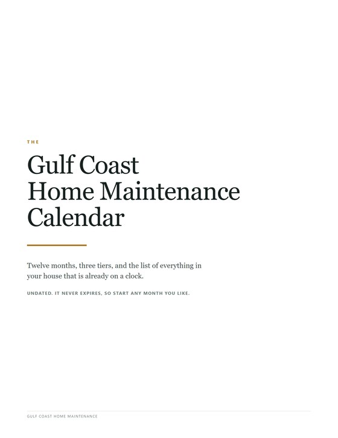
The maintenance kit
Twelve months at three levels of effort, the Big Ticket Watch List, and seven sections for whatever your house happens to have. Twenty-seven pages, undated.
$12.99
Buy on Etsy What's in it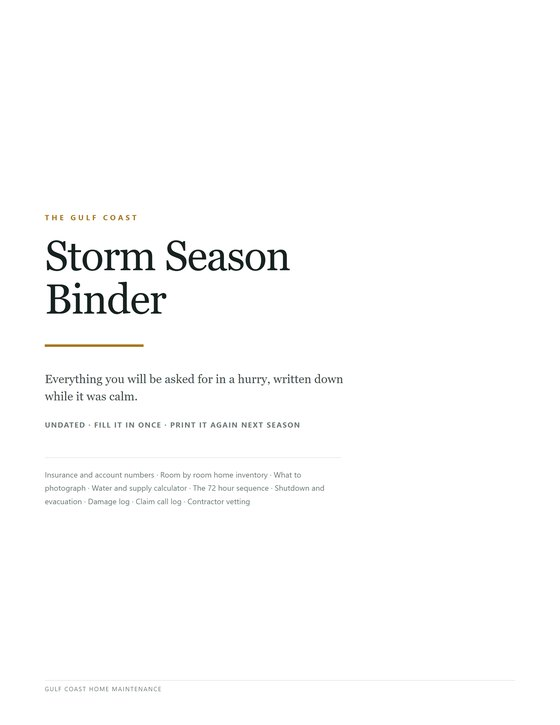
The storm season binder
Policies, a room by room inventory, the countdown, and the damage and claim logs that decide what actually gets paid. Thirty-three pages, undated.
$16.99
Buy on Etsy What's in it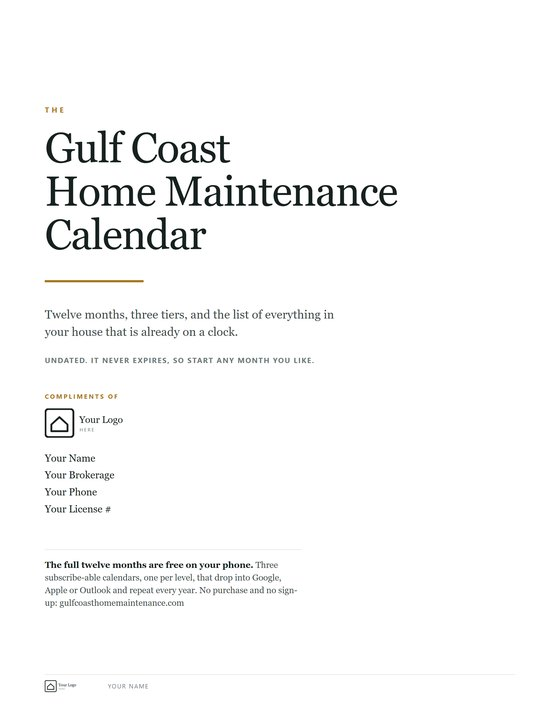
The agent edition
The same kit with your name and brokerage on every page, plus a four-page leave-behind, licensed to print for every client you close.
$39.00
Buy on Etsy What's in itThe twelve months are also free as phone calendars, with no signup and no card.
The Gulf Coast year
Four overlapping seasons your house has to survive, and they don't line up with the ones on a normal calendar. This is the shape the twelve months are built around.
Four things that break the national averages
Those averages assume mild summers, dry air, and a roof that isn't being sandblasted with salt.
Salt air
Corrodes condenser coils, fasteners, and flashing years ahead of schedule.
Humidity
Drives mold, rot, and pests into crawlspaces and wall cavities you never look at.
Termites
Formosan and native subterranean colonies are endemic, and the damage is almost never covered by insurance.
Hurricane season
June 1 to November 30, with an insurance waiting period that makes May the real deadline.
Twelve months, three tiers
The tiers exist so you can start without drowning. Nobody does all of this the first year.
Must Do 12 a year
Safety, or skipping it costs you thousands. If you do nothing else, do these twelve things.
Should Do 12 a year
Protects your home's value and makes what you own last longer.
Going Above 12 a year
For the homeowner who wants to stay ahead of everything.
What a month looks like
May
Hurricane prep month · season opens June 1
The Big Ticket Watch List
Every expensive thing in your house is already on a clock. You write in the year it was installed; the list tells you when to start saving instead of when to start panicking.
Your caulk fails seven times before your roof does, which is exactly why it's the thing nobody budgets for. These numbers run shorter than the national ones on purpose: salt, humidity, and UV wear coastal homes faster than those averages assume. The full kit carries the whole list, plus a page on how to date everything in your house when the previous owner left you nothing.
What the pages look like
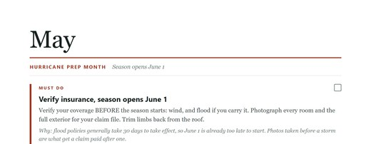
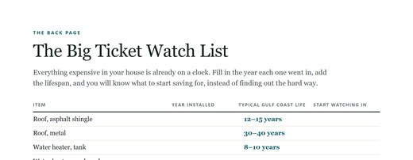
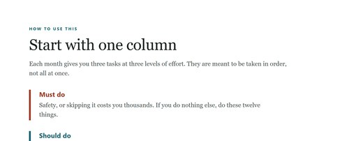
Tops of real pages. The rest of each page, including the step-by-step, is in the kit.
The printable kit
Twenty-seven pages, undated, so it never expires and never goes on sale in January. Twelve months with step-by-step detail, the full seventeen-item Watch List, seven sections for whatever your house happens to have, the page on how to date everything you own, and a first-month checklist for what you only do once.
$12.99one time, no subscription
Instant download · Two PDFs · Print at home on letter paper
Buying for clients rather than your own house? There's an agent edition licensed for exactly that.
The storm season binder
Thirty-three pages for the part of a hurricane nobody prepares for: proving what you owned, and getting paid for it. Built to be filled in while it's calm, because none of it can be done with a cone on the television.
$8,000
Your deductible is a percentage
Not a flat amount. On a $400,000 home a 2 percent wind deductible is $8,000 before the policy pays anything. Most people learn that from an adjuster, afterward. Page one is where yours gets written down.
A third
The money is lost after the wind stops
Most hurricane lists end when the weather does. More than a third of these pages sit after it: a damage log with a column for cause, because wind and flood are different policies, and the claim call log.
7 days
Three days is the federal number
Three days is for a house that was merely inconvenienced. After a Gulf landfall near you it is seven, and fourteen at the end of a long feeder line. The supply calculator does that math.
What the pages look like
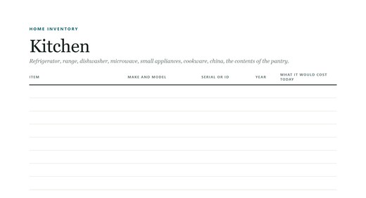
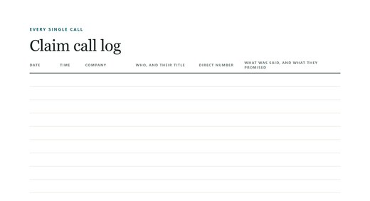
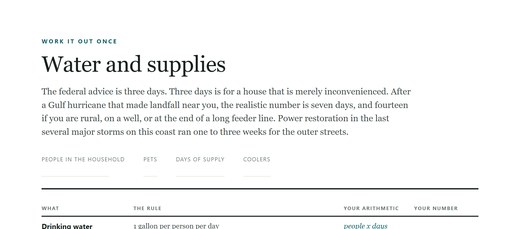
Mostly blanks, which is the point: you fill them in while it is calm.
Written down while it's calm
Policies and deductibles, every number you want in the first hour, nine room by room inventory sheets, the water and supply calculator, the countdown from seven days out to when the wind arrives, the shutdown sequence, re-entry, and the damage and claim logs. Undated, so it works this season and every season after it.
$16.99one time, use it every season
Instant download · Two PDFs · 1,876 fillable fields
Contents coverage is usually 50 to 70 percent of what the house itself is insured for. To collect it you have to say what you owned, which is what the nine inventory sheets are for.
The agent edition
If you hand a client something at closing, this is the version built for it. The same twelve months, branded with your name and brokerage on every page, and licensed to print for every client you close.
4 pages
Not twenty-seven, twenty times
Twenty closings at twenty-seven pages is 540 sheets, and nobody does that twice. The leave-behind is four pages for the closing table. The full kit is there for the client who asks for it.
Once
Type your details in and save
Your name and brokerage are form fields, so you fill them once and keep the file. Or send a logo and I'll build your copies and send them back, at no extra charge.
Every client
Licensed for exactly this
The $12.99 kit is licensed for one household, which is why it does not cover a stack for your clients. This one does, for every client you close, for as long as you're closing them.
What the pages look like
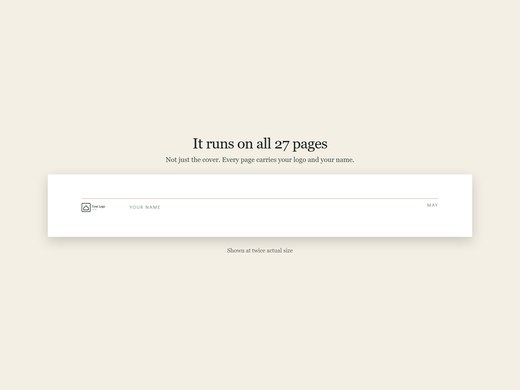
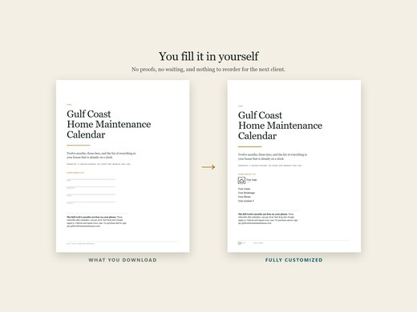

The leave-behind is four pages. The full kit comes with it.
Branded for your brokerage
Four PDFs: the twenty-seven page kit and the four-page leave-behind, each as a print version and a fillable one. Your name, brokerage and contact details sit on every page of both, and stay there once you save the file.
$39.00one time, print for every client
Instant download · Four PDFs · Client gifting license
The leave-behind points your client at the free phone calendars, so the gift keeps arriving long after the paper gets filed.
Put it on your phone Free
All three of these are free. Not a sample of the kit above and not a trial. The same twelve months, as calendars you subscribe to once: no signup, no card, and they repeat every year forever.
Must Do Free 12 reminders a year
Should Do Free 12 reminders a year
Going Above Free 12 reminders a year
Hear about the next one
I'm still building tools like this. Leave your email and I'll tell you when there's something new. That is all the list is for.
Nearly there, check your email. You'll have a confirmation link waiting; the list won't have you until you click it.
However you keep your calendar
Start with Must Do
Add the others when you're ready. The whole point of the tiers is that you don't have to do everything at once.
Subscribe rather than download
A subscription keeps updating as the calendar improves. A downloaded file is a snapshot. It never changes, and it duplicates itself if you import it twice.
Reminders are yours to set
These arrive as all-day events with no alert, so they never wake you up. Add one notification on the calendar itself and it applies to all twelve months.
Want to see the whole year first?
What's on the calendar lists all thirty-six jobs and the month each one falls in, and your calendar events link straight to the task they mention. The step-by-step for each job, with the tools and the mistake that costs money, is in the printable kit.
Setting it up in Google Calendar, including Android
Android uses Google Calendar, so this is the button for it too. The app itself can't add a subscription, so start from a browser. Adding it puts it on your account, not yet on your phone.
- Tap Add to Google Calendar.
- Confirm Add when Google asks.
- On a phone, switch it on: the app menu, then Settings, then the calendar's name.
On your computer but not your phone? That is Google's default rather than a fault. The app keeps its own list of calendars to sync, and anything newly subscribed starts switched off, so step three is not optional.
If the calendar is not in that Settings list at all, the app is not syncing it yet and nothing inside the app will fix that. Open calendar.google.com/calendar/syncselect in a browser signed into the same account, tick the calendar, and save. That page is the only place this can be changed and there is no link to it from the app.
Google refreshes slowly, sometimes up to a day. A new calendar may show its web address as the name until then, which is normal.
If the Google Calendar app opens and nothing happens, most likely on Android, it intercepted the link and cannot subscribe. Use Copy feed URL instead, then add it from a browser with Other calendars → + → From URL. On a phone, turn on your browser's desktop-site setting first.
Setting it up in Apple Calendar or Outlook
Use Subscribe, which hands off to your default calendar app.
Setting it up in any other app
Outlook on the web, Thunderbird and Proton want a pasted address. Use Copy feed URL, then find Subscribe from web, Add from URL, or New calendar from internet.